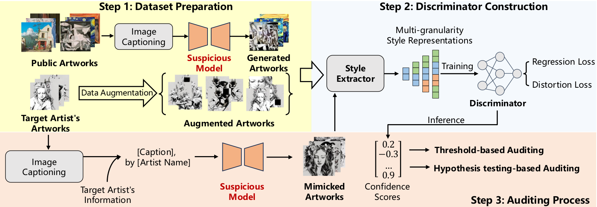

Abstract
Text-to-image models based on diffusion processes, such as DALL-E, Stable Diffusion, and Midjourney, are capable of transforming texts into detailed images and have widespread applications in art and design. As such, amateur users can easily imitate professional-level paintings by collecting an artist’s work and fine-tuning the model, leading to concerns about artworks’ copyright infringement. To tackle these issues, previous studies either add visually impercep- tible perturbation to the artwork to change its underlying styles (perturbation-based methods) or embed post-training detectable watermarks in the artwork (watermark-based methods). However, when the artwork or the model has been published online,i.e., mod- ification to the original artwork or model retraining is not feasible, these strategies might not be viable. To this end, we propose a novel method for data-use audit- ing in the text-to-image generation model. The general idea of ArtistAuditor is to identify if a suspicious model has been fine- tuned using the artworks of specific artists by analyzing the fea- tures related to the style. Concretely, ArtistAuditor employs a style extractor to obtain the multi-granularity style representations and treats artworks as samplings of an artist’s style. Then,ArtistAuditor ∗Both authors contributed equally to this research. †Zhikun Zhang is the corresponding author. Permission to make digital or hard copies of all or part of this work for personal or classroom use is granted without fee provided that copies are not made or distributed for profit or commercial advantage and that copies bear this notice and the full citation on the first page. Copyrights for components of this work owned by others than the author(s) must be honored. Abstracting with credit is permitted. To copy otherwise, or republish, to post on servers or to redistribute to lists, requires prior specific permission and/or a fee. Request permissions from permissions@acm.org. WWW ’25, Sydney, NSW, Australia © 2025 Copyright held by the owner/author(s). Publication rights licensed to ACM. ACM ISBN 979-8-4007-1274-6/25/04 https://doi.org/10.1145/3696410.3714602 queries a trained discriminator to gain the auditing decisions. The experimental results on six combinations of models and datasets show that ArtistAuditor can achieve high AUC values (> 0.937). By studying ArtistAuditor’s transferability and core modules, we pro- vide valuable insights into the practical implementation. Finally, we demonstrate the effectiveness of ArtistAuditor in real-world cases by an online platform Scenario.1 ArtistAuditor is open-sourced at https://github.com/Jozenn/ArtistAuditor.
Resources
Citation
@inproceedings{DZCSJCCZ25,
author = {Linkang Du and Zheng Zhu and Min Chen and Zhou Su and Shouling Ji and Peng Cheng and Jiming Chen and Zhikun Zhang},
title = {{Artist-Auditor: Auditing Artist Style Pirate in Text-to-image Generation Models}},
booktitle = {{WWW}},
publisher = {ACM},
year = {2025},
}